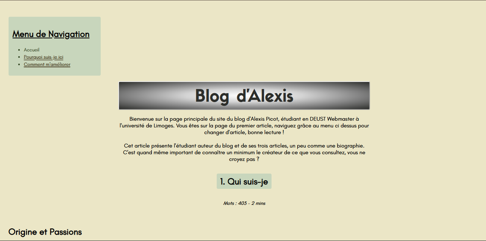
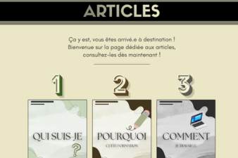
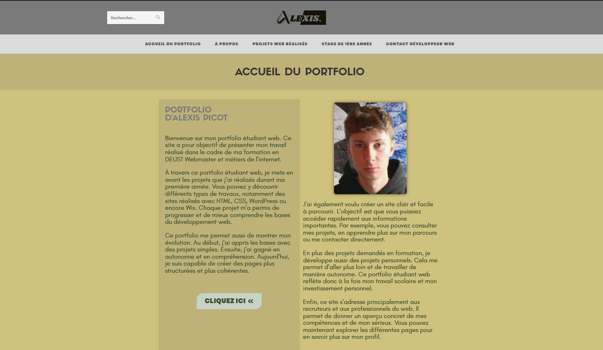
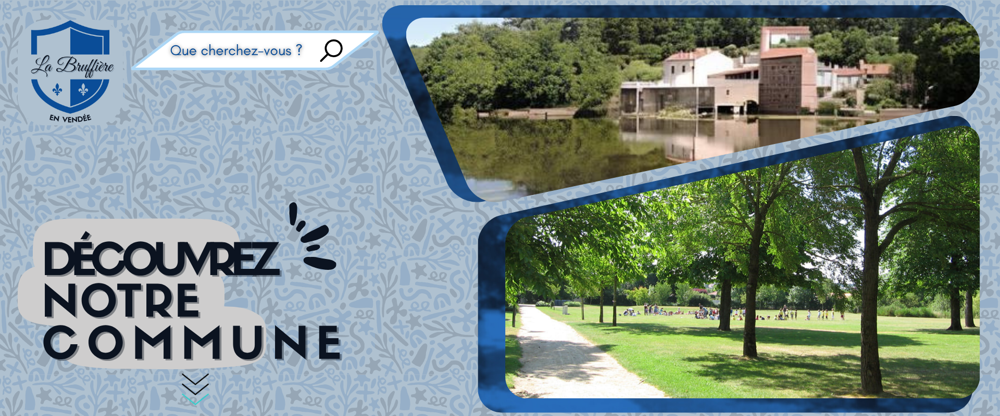
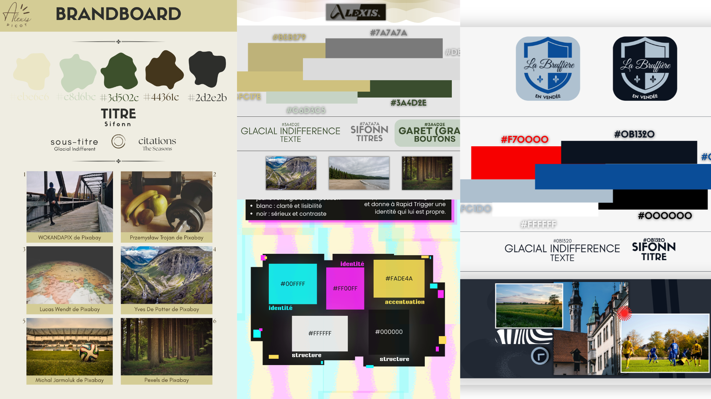
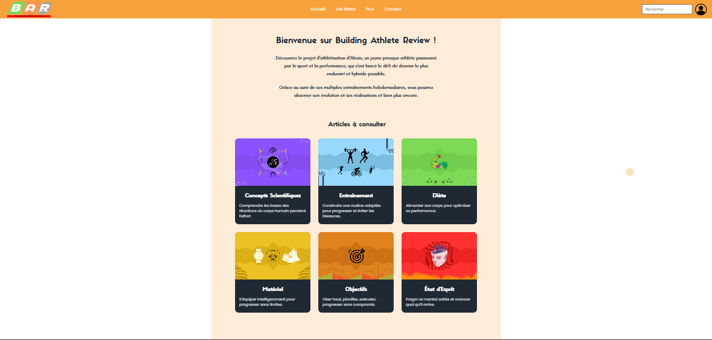

Mes Travaux
Voici une sélection des projets réalisés au cours de ma formation jusqu'à présent, chaque travail a été individuel et m'a permis de comprendre et d'appliquer les compétences acquises dans le cadre de ma formation en DEUST Webmaster Métiers de l'Internet.

 Découverte du HTML et CSS
Découverte du HTML et CSS
Ma première réalisation en 1ère année était la découverte des langages HTML et CSS, afin de comprendre tôt les bases de la création et structuration de pages Web.

Projet Site Wix
Ensuite j'ai appris à manier mon premier CMS : Wix, dans lequel l'objectif était de créer un environnement attractif et simple d'usage grâce aux fonctionnalités intégrées.

Projet Site WordPress
Même concept mais on monte d'un cran, WordPress offre plus de flexibilité et de personnalisation que Wix, et a été un tremplin pour apprendre à créer des sites web plus complexes et dynamiques notamment en groupe.

Maquette d'un site web
En fin de 1ère année j'ai eu comme mission de faire la refonte du site Web de ma commune, aucun code, juste une organisation et une mise en page des plus modernes et ergonomiques possible, le tout sur Canva, logiciel que je maîtrise.

Chartes graphiques & Brandboards
Créer des chartes graphiques fait partie intégrante de mon quotidien en tant qu'élève en Webmaster, pendant ces deux années, j'ai pu en réaliser plusieurs selon des cahiers des charges précis, et j'ai compris qu'être créatif ne suffisait pas, il fallait aussi savoir respecter les contraintes et les besoins du client.

Projet personnel : Building Athlete Review
Enfin, un projet indépendant à mes études qui me tient particulièrement à cœur : Building Athlete Review. Un journal sportif qui suit ma dynamique dans mon objectif d'athlétisation, avec un ton éditorial qui mêle volontairement ambition, optimisme et humour, le tout dans un design simple et ergonomique.